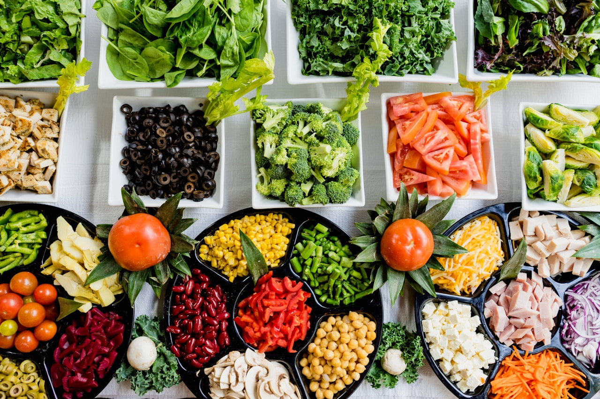
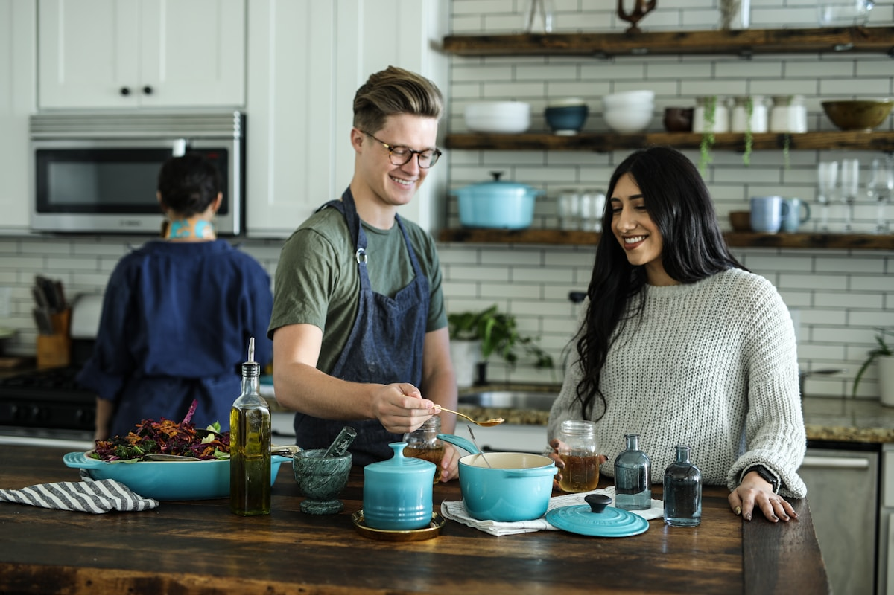

Thermal Science
Thermal Science
The Science of 14-Hour Broth Extraction: Thermal Curves & Aromatics
Mastering the physics of sub-boiling simmering, volatile oil preservation, gelatin breakdown, and clarifying crystal-clear herbal stocks.
Read Full Monograph (1,300+ Words) →
Botanical GuideCultivating & Foraging Heirloom Basil: 12 Cultivars for the Stockpot
From Sweet Genovese to Thai Holy Basil and Dark Opal: understanding eugenol profiles, harvesting timing, and culinary infusion roles.
Read Full Monograph (1,300+ Words) → Cookware Alchemy
Cookware Alchemy
Cookware Alchemy: French Copper vs Enameled Cast Iron for Slow Simmering
Why heavy copper and enameled iron kettles outperform stainless steel by eliminating scorch points and creating gentle convection.
Read Full Monograph (1,300+ Words) →
Camp CookingThe Woodfire Hearth: Camp Cooking Techniques for Outdoor Simmering
Managing hardwood ember beds, smoke infusion techniques, and cast iron kettle setups for cold-weather wilderness cooking.
Read Full Monograph (1,300+ Words) → Umami Science
Umami Science
The Umami Matrix: Combining Dried Mushrooms, Kombu, and Charred Roots
Harnessing natural glutamates and ribonucleotides to build deep, savory complexity in 100% plant-based mineral stocks.
Read Full Monograph (1,300+ Words) → Restorative Food
Restorative Food
The Morning Sipping Broth Ritual: Restorative Hydration & Gut Health
Why sipping warm botanical broths provides bioavailable minerals, soothing amino acids, and balanced energy without caffeine crashes.
Read Full Monograph (1,300+ Words) →